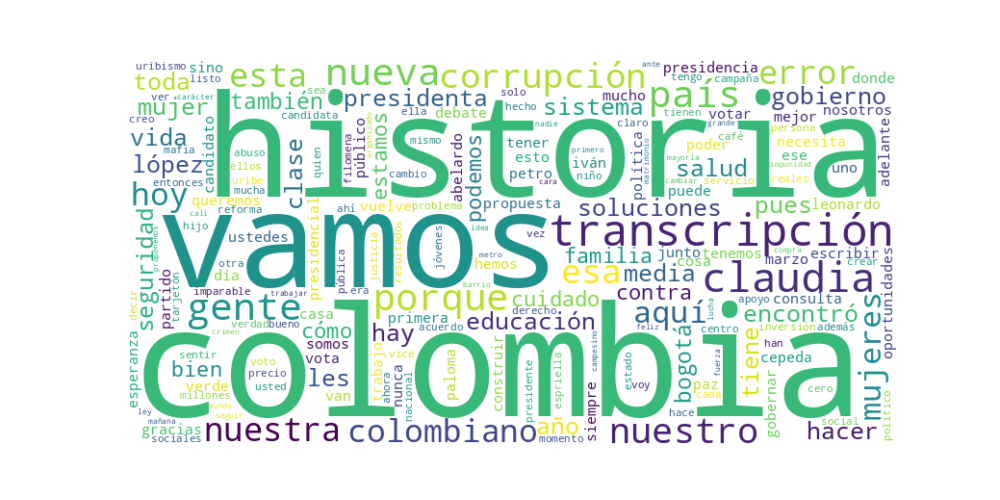

Seguidores: 1,004,675
1. Perfil de Comunicación: Claudia López emplea un estilo de comunicación informal y cercano, diseñado para conectar emocionalmente con el electorado a través de plataformas como Instagram. Utiliza un lenguaje popular y accesible, evitando tecnicismos en favor de un discurso directo y coloquial. Se muestra como una figura próxima y auténtica, compartiendo anécdotas personales (como su relación con Angélica Lozano, historias de su familia o su perro), lo que humaniza su imagen y la presenta como "una más" de la clase media que comprende sus problemas. Sin embargo, esta cercanía se equilibra con un tono firme y decisivo cuando aborda temas de gobierno, reflejando su experiencia como exalcaldesa.
2. Temas Principales: 1. Seguridad y Justicia: Es el tema más recurrente. Lo aborda de manera confrontacional, criticando la "paz total" del gobierno Petro por incrementar la inseguridad. Propone medidas concretas como una "Fiscalía antimafia", una reforma judicial para acabar con la impunidad, y permitir que las grandes ciudades financien su propia policía local. Ejemplo: "¡La falsa 'paz total' del gobierno fracasó! Hoy los colombianos viven con más inseguridad...". 2. Clase Media y Oportunidades Económicas: Se presenta como la candidata de la "clase media hecha a pulso". Propone duplicar esta clase a través de "cinco reformas sociales", con énfasis en apoyo a microempresas, crédito barato, precio de compra garantizado para campesinos y 1 millón de becas de educación con trabajo. Ejemplo: "Somos la voz de la clase media que trabaja, que lucha y que no se rinde". 3. Mujeres y Sistema de Cuidado: Enmarca su candidatura como histórica para los derechos de las mujeres. Propone como política bandera un Sistema Nacional de Cuidado público y gratuito, replicando su experiencia en Bogotá, para "relevar" a las mujeres del trabajo doméstico no remunerado y facilitar su inserción laboral. Ejemplo: "Nadie más en esta campaña propone servicios públicos gratuitos de cuidado para las mujeres y sus familias". 4. Salud: Critica duramente la gestión del sistema de salud por el gobierno actual, a la que atribuye muertes por negligencia. Propone "recuperar" y corregir el sistema mixto (público-privado) que, según ella, funcionó durante la pandemia, combatiendo la corrupción en las EPS. Ejemplo: "El sistema de salud mixto que teníamos salvó millones de vidas... Destruirlo por sectarismo político ha traído consecuencias dolorosas". 5. Corrupción y "Una Nueva Historia": Usa la corrupción como eje para diferenciarse de sus rivales, atacando por igual al "uribismo" y al "petrismo". Se presenta como la opción "sin jefes políticos", "sin bacalaos" y sin casos de corrupción en su gestión. Su eslogan principal, "Una Nueva Historia", encapsula la promesa de superar los "odios del pasado" (la polarización Uribe-Petro) con soluciones prácticas. Ejemplo: "Disfrazar el viejo uribismo de 'nueva alternativa' no es, ni será, mi opción".
3. Tono y Sentimiento Dominante: El tono general es crítico y confrontacional hacia el gobierno de Petro y hacia sus rivales directos (especialmente Iván Cepeda y Abelardo de la Espriella), acusándolos de corrupción, ineptitud o representar los extremos. Sin embargo, este tono se combina con uno propositivo y esperanzador cuando habla de sus soluciones para la clase media y las mujeres. Existe un optimismo calculado ("¡Sí queremos, podemos!") y un fuerte sentimiento de orgullo identitario (mujer, lesbiana, hija de maestra, clase media) que busca generar empatía y movilización.
4. Palabras Clave de Poder: * "Una Nueva Historia": Eslogan central que enmarca toda su propuesta como una ruptura con el pasado polarizado. * "Clase Media": Su sujeto político principal, al que constantemente interpela y al que promete representar y duplicar. * "Soluciones (reales)": Antítesis de lo que, según ella, ofrecen sus rivales (ideología, polarización, corrupción). * "Hecha a pulso" / "Berraquera": Términos que refuerzan su narrativa de origen y la de sus seguidores: esfuerzo, autonomía y mérito. * "Cero corrupción" / "Sin jefes": Diferenciadores éticos y de independencia política. * "Sistema de Cuidado": Su propuesta social emblemática, dirigida al voto femenino. * "Fiscalía Antimafia" / "Cero impunidad": Léxico fuerte en seguridad, que apela a la sensación de orden. * "Imparables": Término para describir a su equipo y a sus seguidores, creando un sentido de movimiento y fortaleza colectiva.
5. Conclusión Estratégica: La estrategia de comunicación de Claudia López es híbrida y segmentada. Por un lado, apela de manera emocional e identitaria a mujeres, jóvenes y la clase media urbana y regional, utilizando un lenguaje cercano y prometiendo soluciones prácticas a problemas cotidianos (cuidado, becas, seguridad ciudadana, apoyo a negocios). Por otro, busca capitalizar el voto de centro y desencantado de ambos extremos, presentándose como la única opción viable para "derrotar" tanto al uribismo como al petrismo, superando la polarización con un discurso de gestión eficiente, resultados y anti-corrupción. Su discurso busca evocar esperanza en un futuro pragmático ("soluciones reales") y orgullo en una identidad colectiva (clase media trabajadora, mujeres berracas), mientras moviliza el rechazo contra sus adversarios al enmarcarlos como representantes de una "vieja historia" de odios, abusos y corrupción.
1. Resumen del Patrón de Éxito: La fórmula de éxito se basa en una combinación potente de legitimación por resultados y confrontación emocional. La candidata construye su credibilidad apelando a su experiencia de gestión ("lo hecho en Bogotá"), presentándose como la única opción probada y libre de corrupción. Simultáneamente, genera engagement mediante una retórica de confrontación directa y polarizante, definiendo enemigos claros (el "uribismo", la "mafia", políticos "que posan") y posicionándose como la representante auténtica y "hecha a pulso" de una mayoría silenciada. El mensaje fusiona la promesa de eficacia técnica con un llamado emocional a la defensa de identidades (mujeres, clase media) contra élites tradicionales.
2. Tácticas de Comunicación Clave: * Contraste y Desenmascaramiento: Es su técnica central. No solo presenta sus propuestas, sino que define y ataca ferozmente a sus oponentes, catalogándolos como representantes de lo viejo, corrupto o falso ("la mona, por mucho que se vista de seda, mona se queda"; "defensor de la mafia"; "posar de lo que no son"). Esto genera un "nosotros vs. ellos" muy claro. * Legitimación por Resultados y Experiencia: Repite constantemente el binomio "experiencia + resultados" como su principal aval. Cita programas específicos de su gestión (Jóvenes a la U, Sistema de Cuidado) para pasar de la promesa a la "prueba". Enfatiza que la presidencia "no puede ser el primer trabajo", descalificando a rivales por inexperiencia. * Apelación Identitaria y de Clase: Se dirige explícitamente a audiencias específicas con un lenguaje de pertenencia: mujeres ("mujeres hechas a pulso", línea histórica de sufragistas), clase media trabajadora ("hijos del Icetex", "estrato 2, 3 y 4") y jóvenes. No habla a "todos", sino a estos grupos concretos, haciéndoles sentir representados y convocados. * Redención y Victimización como Fortaleza: Responde a los ataques (ej. acusaciones sobre el Metro) transformándolos en prueba de su resiliencia y en evidencia de la "maldad" de sus detractores. La "justicia que le da la razón" no es solo una absolución, es un activo narrativo que la presenta como una luchadora que supera calumnias.
3. Temas de Mayor Resonancia: * Lucha contra la corrupción y la "mafia": El eje moral. Presenta la elección como un plebiscito entre honradez (encarnada en ella) y corrupción (encarnada en rivales específicos como De la Espriella y, por asociación, el "uribismo"). * Experiencia de gobierno vs. improvisación: Contrasta su historial ejecutivo tangible con la falta de gestión de sus rivales. Es su principal argumento de competencia. * Defensa de la mujer y la clase media: Estos no son solo temas de política pública, son identidades políticas movilizadoras. Los presenta como grupos históricamente subrepresentados que hoy, con su candidatura, tienen la oportunidad de ser "bien contados". * Soberanía del voto ("gobernar en cuerpo ajeno"): La idea de que otros candidatos son marionetas de poderes fácticos (Uribe, Petro) resuena como un llamado a la autonomía política del elector.
4. Perfil de la Audiencia Implícita: Se dirige a una coalición de identidades, no ideológica tradicional. Habla principalmente a: * Mujeres profesionales y jóvenes, enfatizando empoderamiento y conquistas sociales. * La clase media urbana educada y aspiracional, que valora el mérito, desprecia la corrupción y se siente ignorada por los extremos políticos. * Votantes pragmáticos que priorizan gestión y resultados sobre ideología pura. * Su base leal de Bogotá, recordándoles sus logros concretos. El lenguaje es directo, a veces coloquial ("berraquera"), y apela más al sentido común y al orgullo identitario que a tecnicismos complejos.
5. Conclusión Estratégica: La clave fundamental de su poder discursivo es la fusión de la técnica con la tribu. Supera el discurso político tradicional, a menudo abstracto o ideologizado, al ofrecer un relato personal y colectivo de eficacia y redención. No es solo "yo gestiono bien", es "nosotros, los decentes y trabajadores, finalmente tenemos a una de los nuestros que sabe cómo hacerlo y no se deja humillar". Transforma la experiencia en épica personal y la política en una batalla moral donde ella es a la vez la administradora competente y la campeona de las mayorías olvidadas. Su diferencia radical es personalizar tanto la solución (ella) como el problema (sus oponentes nombrados), haciendo de la elección una opción emocionalmente cargada y moralmente binaria, pero respaldada por el tangible argumento de los "resultados".

Caption: Tengo experiencia gobernando y cero casos de corrupción. Porque sé continuar lo que funciona y corregir lo que está mal.💪🏻 En Bogotá lo demostramos: creamos Jóvenes a la U para que miles de estudiantes accedieran a educación superior y pusimos en marcha el Sistema Distrital de Cuidado para apoyar a las mujeres que sostienen sus hogares. Este domingo Colombia tiene una decisión: derrotar la corrupción y el uribismo con soluciones y carácter: ¡vota Claudia presidenta! 💜🇨🇴 #colombia #mujeres #experiencia #bogota #resultados
Likes: 1,010 | Comentarios: 149 | Reproducciones: 14,378
Ver en InstagramCaption: La justicia nos dio la razón: “las revelaciones” de Vicky Dávila y Revista Semana en nuestra contra siempre fueron totalmente FALSAS. La Fiscalía corroboró que nunca nos hemos robado ni un peso, a pesar de todos los rumores e injurias que quisieron venderle a la ciudadanía sobre el Metro de Bogotá con el fin de impulsar su candidatura presidencial. ¡La verdad siempre llega y está de nuestro lado!💪🏼 #presidenta #inocente #denuncia #Bogotá #politica
Likes: 5,013 | Comentarios: 510 | Reproducciones: 81,978
Ver en InstagramCaption: Me tomaría un café con cualquier candidato, menos con Abelardo de la Espriella. No es aceptable que alguien que ha defendido intereses de la mafia y se ha beneficiado del dinero del despojo de miles de colombianos, hoy pretenda ser Presidente. ¡No lo podemos permitir! #presidenta #respuesta #politica #colombia
Likes: 7,691 | Comentarios: 1,250 | Reproducciones: 132,420
Ver en Instagram